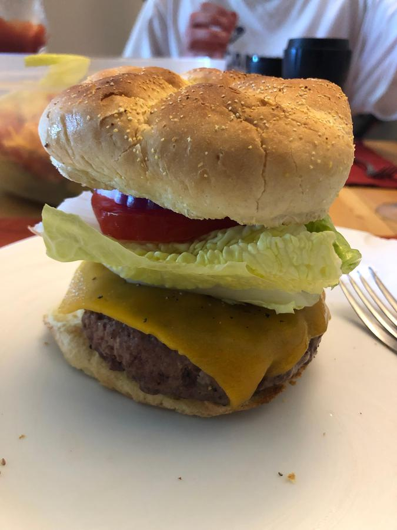

Personal rating: 2 / 5

Meat: Ground Beef, Ground Chuck (80/20), or Ground Beef Short Ribs
Cast Iron Pan or Grill
For the pan, use Beef Fat or cook Bacon first (don't use butter)
Kaiser Roll / Potato Roll, plain toasted
Lettuce/Tomato/Ketchup/Dill Pickles
See notes section. Brief instructions below
Work the meat into a patty until it sticks to your hand and won't fall off. Work to the diameter of the bun, but to a thickness of your thumb. Form into a volcano shape
Season with salt. Set on pan and cook until browned. Add onion on top and flip. Cook until firm (medium-well). Add a slice of Munster and let partially melt. The cheese will continue to melt when removed